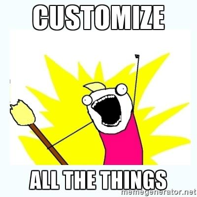

Better Theme Customizer
by: Garrett Rappaport
WHOAMI
Software Developer @ Sideways8 Interactive
Avid table top gamer
Musician
Star Wars nerd
Geek Orthodox
The Customize API
- Added in WordPress 3.4
- Was called Theme Customization API
- Allows developers to customize and add controls to the admin screen
- Live preview
- Accessible through "Appearance" → "Customize"
The Customize API
- Object-oriented
-
Four main parts
- Panels - containers for sections
- Sections - UI containers for controls
- Settings - handle live-previewing, saving, and sanitization of your customizer objects
- Controls - define what the input type is (e.g. textarea, dropdown, etc.) and make a setting something controllable and visible.
Where are the values stored?
- Stored in the wp_options table
- Column name: option_name
- Column value: theme_mods_{theme_name} (theme_mods_twentyseventeen)
Why Our Implementation is Better

What is the Better Theme Customizer
- Wrapper for the Customizer API
- Extends functionality
- Easy to setup and configure
Why we use the Better Theme Customizer?
- We build a lot of custom themes
- Saves rewriting code.
- Easy configuration
- Prebuilt controls for Gravity Forms, Images, Posts, etc
- Most themes use a "hacky" implementation without the Customize API (Divi)
Let's Dive In
Questions?

Thanks!!
github.com/syntacticNaCl
@syntacticNaCl
Freenode IRC: syntacticNaCl